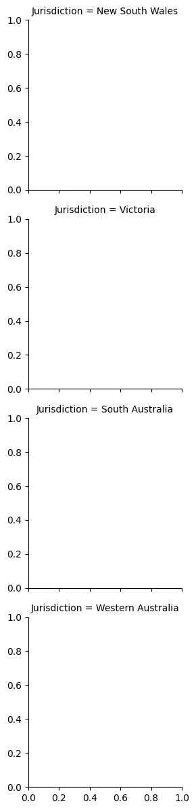

from fagrants_module import fagrants
inst = fagrants.fagrants_model(
data_path = "./Data/FA Grants Tables - Python.xlsx",
per_capita_minimum = 0.17,
per_capita_minimum_base = 0.3
)
sim_grants = inst.run()13 A 17% Per Capita Minimum Grant
The model here applies a per capita minimum grant constraint, set at 17%, to ensure that each jurisdiction receives at least this proportion of the funds if they were allocated on a per capita basis.
The per capita minimum for the benchmark scenario is set to 30%, as is the status quo.
sim_grants["Sim_i"] = sim_grants["UID"].str.split("_").str[1].astype(str)sim_grants| Jurisdiction | LGA | ACLG | UID | ERP_2024 | Grant_2024 | ERP_2025 | Grant_base_2025 | Grant_2025 | ERP_2026 | Grant_base_2026 | Grant_2026 | ERP_2027 | Grant_base_2027 | Grant_2027 | ERP_2028 | Grant_base_2028 | Grant_2028 | Sim_i | |
|---|---|---|---|---|---|---|---|---|---|---|---|---|---|---|---|---|---|---|---|
| 0 | New South Wales | The Council of the City of Sydney | UCC | TheCounciloftheCityofSydney_1 | 231086 | 5901858 | 238154.0 | 6.198876e+06 | 3.512696e+06 | 240869.0 | 6.429082e+06 | 3.643147e+06 | 243445.0 | 6.663437e+06 | 3.775948e+06 | 246049.0 | 6.903611e+06 | 3.912046e+06 | 1 |
| 1 | New South Wales | Hunter's Hill Council | UDS | Hunter'sHillCouncil_1 | 14036 | 441211 | 14465.0 | 4.585883e+05 | 3.106787e+05 | 14630.0 | 4.818269e+05 | 3.295757e+05 | 14787.0 | 4.928998e+05 | 3.338842e+05 | 14945.0 | 5.212085e+05 | 3.584223e+05 | 1 |
| 2 | New South Wales | Mosman Municipal Council | UDM | MosmanMunicipalCouncil_1 | 29071 | 908679 | 29960.0 | 9.480184e+05 | 6.413304e+05 | 30302.0 | 9.819493e+05 | 6.636276e+05 | 30626.0 | 1.025383e+06 | 6.968779e+05 | 30953.0 | 1.090693e+06 | 7.556230e+05 | 1 |
| 3 | New South Wales | Burwood Council | UDM | BurwoodCouncil_1 | 42498 | 1136510 | 43798.0 | 1.196932e+06 | 7.134981e+05 | 44297.0 | 1.235242e+06 | 7.327194e+05 | 44771.0 | 1.270678e+06 | 7.480510e+05 | 45250.0 | 1.318094e+06 | 7.769286e+05 | 1 |
| 4 | New South Wales | Lane Cove Municipal Council | UDM | LaneCoveMunicipalCouncil_1 | 41549 | 1123412 | 42820.0 | 1.179224e+06 | 7.082598e+05 | 43308.0 | 1.223445e+06 | 7.350727e+05 | 43771.0 | 1.261218e+06 | 7.537792e+05 | 44239.0 | 1.301400e+06 | 7.746948e+05 | 1 |
| ... | ... | ... | ... | ... | ... | ... | ... | ... | ... | ... | ... | ... | ... | ... | ... | ... | ... | ... | ... |
| 537995 | Northern Territory | Tiwi Islands Regional Council | RTM | TiwiIslandsRegionalCouncil_1000 | 2763 | 450412 | 2887.0 | 5.626662e+05 | 6.206389e+05 | 2910.0 | 7.182112e+05 | 8.036014e+05 | 2921.0 | 7.915454e+05 | 8.890983e+05 | 2944.0 | 8.845674e+05 | 9.977177e+05 | 1000 |
| 537996 | Northern Territory | Victoria Daly Regional Council | RTL | VictoriaDalyRegionalCouncil_1000 | 3314 | 589064 | 3463.0 | 5.787290e+05 | 6.304029e+05 | 3490.0 | 6.382656e+05 | 6.992433e+05 | 3504.0 | 7.076615e+05 | 7.797667e+05 | 3531.0 | 6.652054e+05 | 7.274230e+05 | 1000 |
| 537997 | Northern Territory | Wagait Shire Council | RTS | WagaitShireCouncil_1000 | 467 | 12407 | 488.0 | 1.270314e+04 | 7.198447e+03 | 492.0 | 1.310739e+04 | 7.427519e+03 | 494.0 | 1.350900e+04 | 7.655100e+03 | 498.0 | 1.397056e+04 | 7.916649e+03 | 1000 |
| 537998 | Northern Territory | West Arnhem Regional Council | RTL | WestArnhemRegionalCouncil_1000 | 7449 | 1953690 | 7785.0 | 1.867657e+06 | 2.089056e+06 | 7845.0 | 1.713549e+06 | 1.902399e+06 | 7875.0 | 1.668137e+06 | 1.844621e+06 | 7936.0 | 1.742932e+06 | 1.928800e+06 | 1000 |
| 537999 | Northern Territory | West Daly Regional Council | RTL | WestDalyRegionalCouncil_1000 | 3445 | 579827 | 3600.0 | 6.601503e+05 | 7.247376e+05 | 3628.0 | 6.820488e+05 | 7.488817e+05 | 3642.0 | 6.896878e+05 | 7.561188e+05 | 3670.0 | 7.705074e+05 | 8.498672e+05 | 1000 |
538000 rows × 19 columns
for year in range(2025, 2029):
sim_grants[f"Grant Delta_{year}"] = sim_grants[f"Grant_{year}"] - sim_grants[f"Grant_base_{year}"]sim_grants_udl = sim_grants[sim_grants["ACLG"] == "UDL"].copy()sim_grants_udl.groupby("Jurisdiction")<pandas.core.groupby.generic.DataFrameGroupBy object at 0x70c3590b3790>import seaborn as sns
import matplotlib.pyplot as pltdef monte_carlo_plot(data)g = sns.FacetGrid(sim_grants_udl, row="Jurisdiction")
